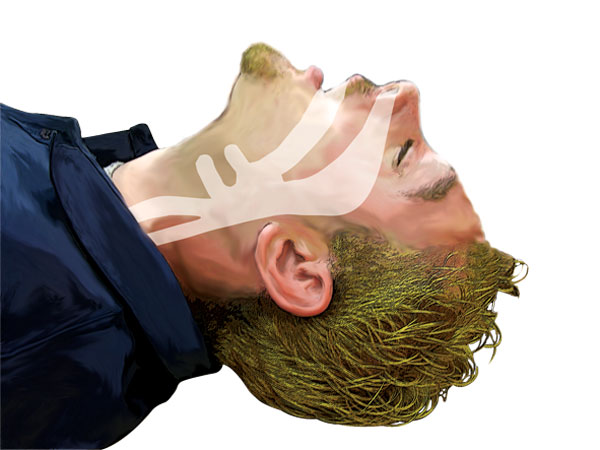
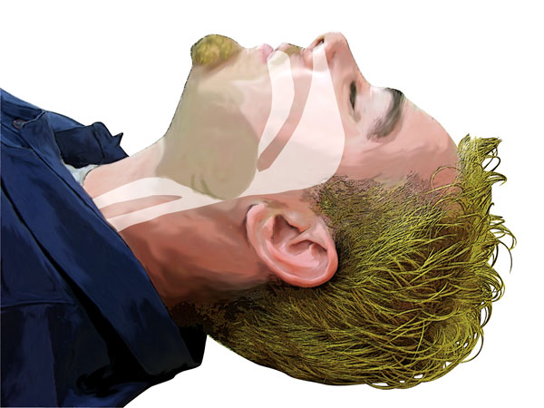
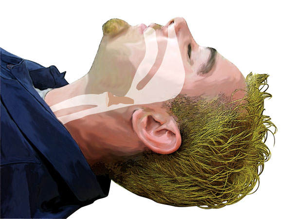
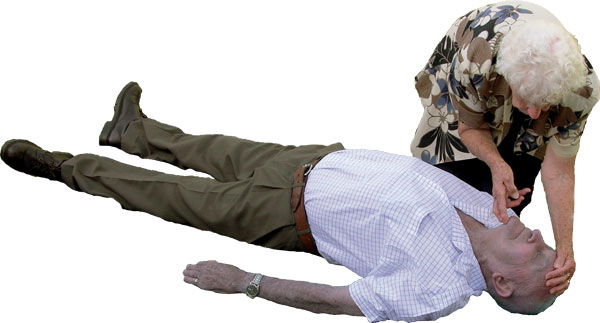

Airway Management
Airway Management
Unconscious casualties have no control over their muscles, including the muscles that control the tongue.

Airway Open

Airway Closed

Airway Obstructed
The relaxed tongue will fall backwards and block the airway. If a breathing, unconscious casualty remains on their back, the risk of airway obstruction increases.
By tilting the head back and lifting the chin forward, the tongue is pulled away from the back of the throat. Ensuring a clear airway is essential so the casualty can breathe.
Material in the mouth (such as food, blood or vomitus) may also obstruct the airway of an unconscious casualty. It is vital that if such material is present it is removed.
In some cases the casualty may regurgitate or vomit the stomach contents which then enter the mouth and nose causing an obstruction. Regurgitation is more likely if the casualty is not provided with correct head tilt and chin lift.
There are 2 types of head tilt used in resuscitation:
 Neutral – used for infants and with suspected spinal injury casualties
Neutral – used for infants and with suspected spinal injury casualties
 Backward – used in resuscitation of older children and adults
Backward – used in resuscitation of older children and adults
By combining correct head tilt and effective chin lift, you can assist the casualty to have an open and clear airway and reduce the risk of regurgitation.
In most situations, the airway can be managed with the use of head tilt and chin lift. If the airway is obstructed by a foreign body or fluid, then the airway should be cleared with the casualty lying on their side to avoid accidental inhalation of obstructions.
 Unless you can fully assess a casualty in the position in which you find them, turn the casualty onto their back
Unless you can fully assess a casualty in the position in which you find them, turn the casualty onto their back
 Place your hand on the forehead and gently tilt the head back
Place your hand on the forehead and gently tilt the head back
 Support and lift the chin to open the airway
Support and lift the chin to open the airway
 Remove dislodged or loose dentures
Remove dislodged or loose dentures
 Leave well fitting dentures in place
Leave well fitting dentures in place
A casualty requiring rescue breaths depends on an open airway.
If rescue breaths are unsuccessful you will need to clear the airway after the next cycle of compressions.
 Remove any visible obstruction from the casualty's mouth
Remove any visible obstruction from the casualty's mouth
The airways of an infant or young child are kept open and clear by supporting the head in the horizontal (neutral) position. DO NOT extend the head backwards.
If opening the airway is difficult in the horizontal position, tilt the infant or child's head back slightly with a gentle movement until the airway opens.
Backward head tilt and chin lift
This method is used for a casualty in the side position, or when on their back before starting rescue breaths or chest compressions.
 place your hand on the forehead and gently tilt the head back
place your hand on the forehead and gently tilt the head back
 place your fingertips under the point of the casualty's chin and lift the chin to open the airway.
place your fingertips under the point of the casualty's chin and lift the chin to open the airway.
 in children and infants do not press on the soft tissues under the chin as this may block the airway
in children and infants do not press on the soft tissues under the chin as this may block the airway
Clearing the airway of an upright casualty
In some instances, a casualty is trapped or held in a position which prevents the first aider placing them flat on the ground. It still remains vital the airway is kept clear. The best way to do this is applying backward head tilt and chin lift.
Great care is needed if there is any possibility of a spinal injury given the entire weight of the casualty's head may need supporting. Once backward head tilt is applied, keep the head in that position and do not allow it to fall forward again.